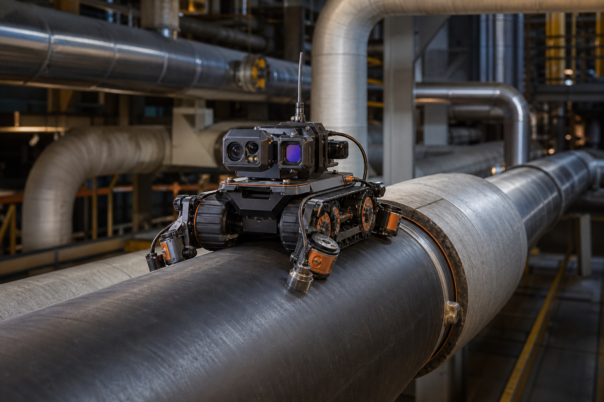
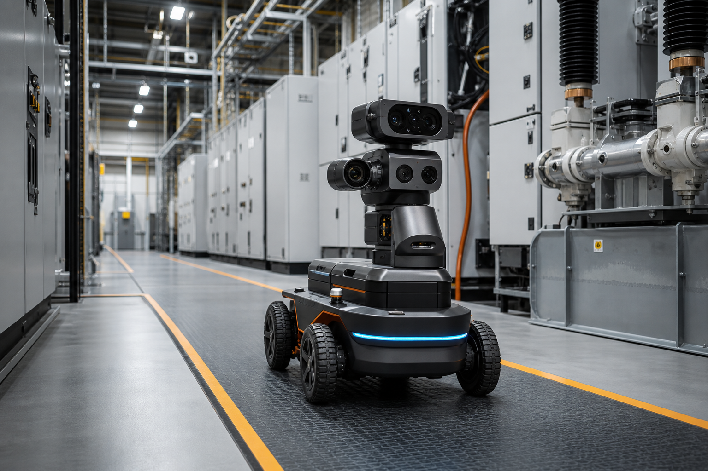
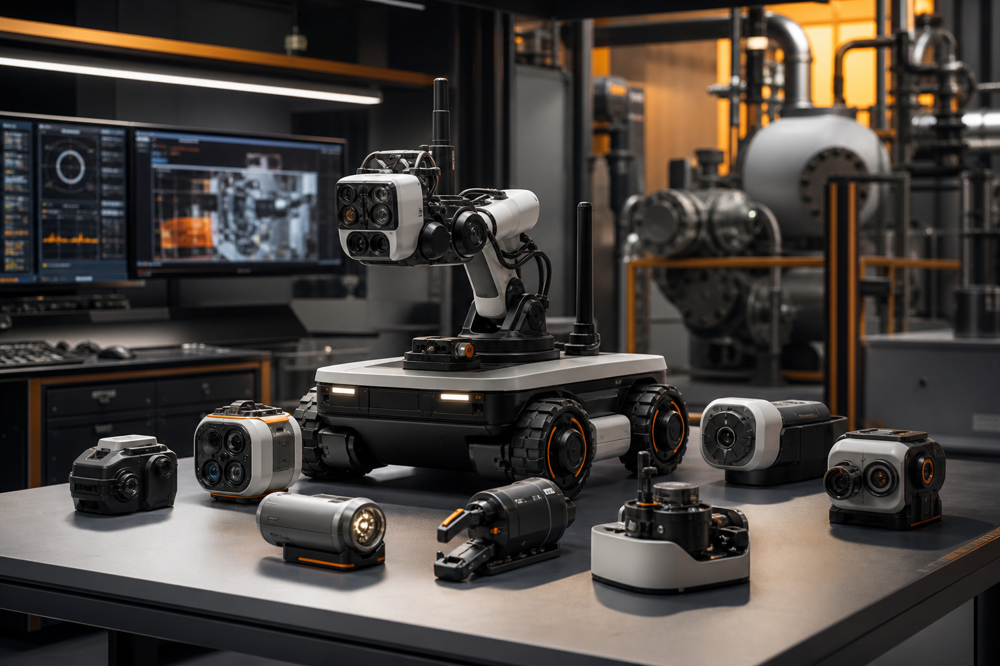

AccuBotix Technologix builds robotic inspection systems that combine mobility, sensors, and AI-assisted reporting for industrial assets in power plant environments.
AccuBotix currently offers two inspection products for power plants and industrial facilities, with the platform designed to expand as new inspection modules are added.

Autonomous crawler inspection for leaks, cracks, corrosion, wall loss, and corrosion-under-insulation using visual, thermal, acoustic, ultrasonic, and PEC sensing.
View Pipeline
Route-based robotic inspection for switchgear, transformers, cable terminations, MCCs, GIS, and substations using PD sensors, localization, and AI reporting.
View PDI
More robotic inspection products can be added into the same web structure as AccuBotix expands across industrial asset health monitoring workflows.
Discuss Need